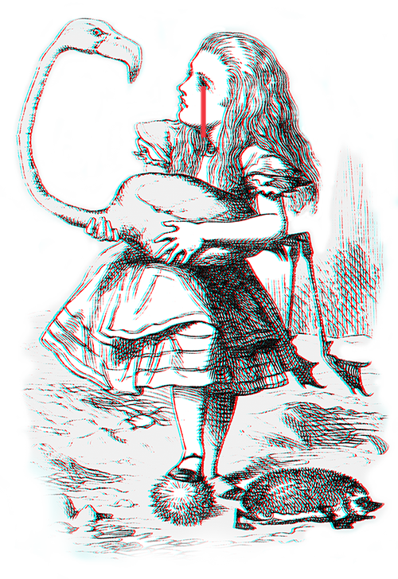
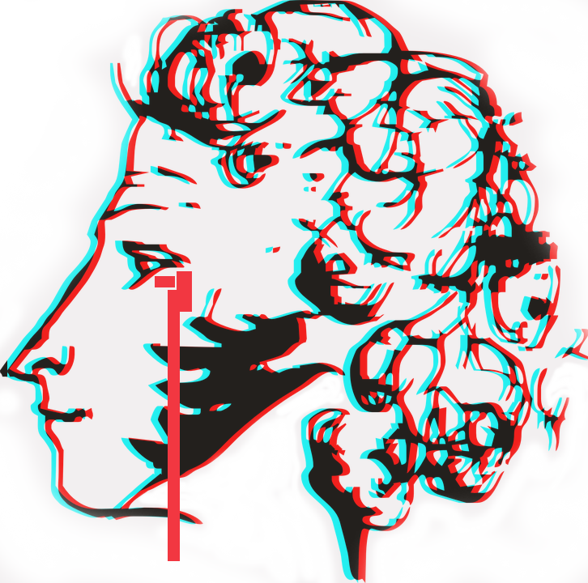

Resumé.
GitHub.
Михаил
Developer
/
Designer
Hello.
My name is Mikhail Chebotar, and I'm a web-developer based in Rochester, New York. Reach out and we'll create something memorable.
the things I know.

the things I've done.
"Quite impossible, as you see, to start without an introduction," laughed Ivan. "Well, then, I mean to place the event described in the poem in the sixteenth century, an age—as you must have been told at school—when it was the great fashion among poets to make the denizens and powers of higher worlds descend on earth and mix freely with mortals... In France all the notaries' clerks, and the monks in the cloisters as well, used to give grand performances, dramatic plays in which long scenes were enacted by the Madonna, the angels, the saints, Christ, and even by God Himself. In those days, everything was very artless and primitive. An instance of it may be found in Victor Hugo's drama, Notre Dame de Paris, where, at the Municipal Hall, a play called Le Bon Jugement de la Tres-sainte et Gracièuse Vierge Marie, is enacted in honour of Louis XI, in which the Virgin appears personally to pronounce her 'good judgment.' In Moscow, during the prepetrean period, performances of nearly the same character, chosen especially from the Old Testament, were also in great favour. Apart from such plays, the world was overflooded with mystical writings, 'verses'—the heroes of which were always selected from the ranks of angels, saints and other heavenly citizens answering to the devotional purposes of the age. The recluses of our monasteries, like the Roman Catholic monks, passed their time in translating, copying, and even producing original compositions upon such subjects, and that, remember, during the Tarter period!... In this connection, I am reminded of a poem compiled in a convent—a translation from the Greek, of course—called, 'The Travels of the Mother of God among the Damned,' with fitting illustrations and a boldness of conception inferior nowise to that of Dante. The 'Mother of God' visits hell, in company with the archangel Michael as her cicerone to guide her through the legions of the 'damned.' She sees them all, and is witness to their multifarious tortures. Among the many other exceedingly remarkably varieties of torments—every category of sinners having its own—there is one especially worthy of notice, namely a class of the 'damned' sentenced to gradually sink in a burning lake of brimstone and fire. Those whose sins cause them to sink so low that they no longer can rise to the surface are for ever forgotten by God, i.e., they fade out from the omniscient memory, says the poem—an expression, by the way, of an extraordinary profundity of thought, when closely analysed. The Virgin is terribly shocked, and falling down upon her knees in tears before the throne of God, begs that all she has seen in hell—all, all without exception, should have their sentences remitted to them. Her dialogue with God is colossally interesting.
X
or hit Esc
DemoGrid
A front-end freelance for Tim Bayer
The following is the result of my first freelance experience. I was asked to develop a visually appealing and dynamically responsive front-end for a frisbee golf scoring web-application.
Focus: Responsive CSS/HTML, JExcel Library, Client Communication & Satisfication.

* Logo incomplete, fencing illustration is done by KUCO (though modified by me to better represent the color pallete of the final product. Will be replaced with commissioned artwork for release).

X
or hit Esc
IST at RIT
Redesigns and APIs
Our class was asked to redesign our major's website, but we were also asked to dynamically fill that website with data originating only from RIT's IST API.
Focus: API calls, JQuery, Forced Scrolling.
X
or hit Esc
Make Time
A User-centered Reading Appilication
In the midst of routine, I realized that my bus commute to work/school consisted of a generally fixed length of time. I had tried several book based apps from the App Store which segmented and gamified the reading process, but I noticed that there wasn't a single one that could curate text based off my schedule rather than their own. I decided to develop a native iOS application that can break down a novel based upon your personal reading speed and the length of time you have to dedicate to reading.
#a5b8c5
#9a98b3
#c28c89
The Development Process
Date
2019
Language
Swift
My first non-hybrid mobile application. Coded in Swift, and tested on various iOS devices. I worked closely with an illustrator named Hannah Goerner in order to create the charming imagery used in the initial tutorial segment of the application. In this project, I've gained experience in Swift Auto Layout, Property Lists, View Controllers, Swift Frameworks, and User-Interface Animation.
X
or hit Esc
➊
DemoGrid
Freelance for Tim Bayer, 2019

➋
IST/RIT
Project for Client Programming, 2019
➌
Make Time
Project for Application Development, 2019


Instagram.